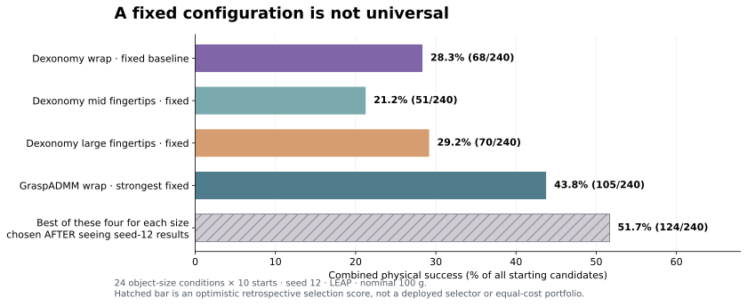
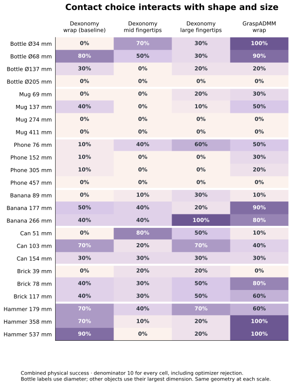
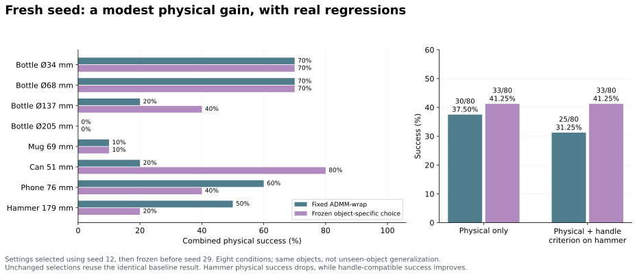
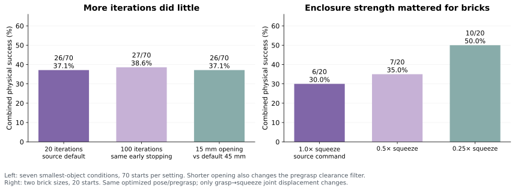

Default versus tested alternatives


“Default” here means the source Dexonomy optimizer settings with the released Adducted Thumb / wrap template. The alternative templates and GraspADMM settings are also released configurations. This pilot uses one initialization epoch and disables template evolution; it is not a reproduction of the full dataset-generation campaign.
Inspect the actual enclosed grasps in 3D
Choose a comparison, switch between its baseline and changed setup, then rotate or zoom the mesh. After movement shows the recorded final state, including any separation from the hand. Examples illustrate mechanisms; the rates include all attempts.
What matters: fit between hand contacts and local geometry
The small can favors mid fingertips, the small bottle favors ADMM-wrap, and the large banana favors large fingertips. For the bottle, fixed-wrap success rises and then falls with diameter: 0%, 80%, 30%, 0% at roughly 34, 68, 137, and 205 mm. Size therefore changes the feasible contact arrangement; it is not simply “larger is worse.”


Large bottle, large mug, and very thin large phone failures remain under all four fixed choices. This suggests hand reach/contact feasibility limits as well as parameter sensitivity; it does not prove that a better setting can solve every object.
Does object-specific selection hold up beyond the tuning seed?
Only weakly so far. After choosing settings on seed 12 and freezing them, a seed-29 test on eight of the same object/size conditions improves physical success from 30/80 (37.5%) to 33/80 (41.25%). The small can improves, but the phone and hammer lose physical passes.


Which changes helped—and which did not?


| Choice | Measured evidence | Interpretation |
|---|---|---|
| Contact topology / reach | Small can: wrap 0/10 → mid fingertips 8/10. | Required contacts must fit the shape and hand workspace. Different templates also change the initial proposals. |
| Contact region / intended use | Small hammer: 0/10 → 4/10 physical + handle-compatible passes on seed 12. | A stable head grasp is unsuitable for the declared handle-only purpose. Region matching and mid-template selection changed together. |
| Optimizer formulation | Small bottle: Dexonomy 0/10 → ADMM 10/10 with identical wrap initializations. | A stronger existing optimizer can solve some failures without semantic reasoning. ADMM has higher work per candidate. |
| Closure / squeeze | Two brick sizes: 6/20 → 10/20 after quarter squeeze. | The executed closure can destroy an otherwise plausible grasp. More squeeze is not always more stable. |
| Iteration cap / pregrasp opening | 20 → 100 iterations: 26/70 → 27/70. Shorter opening: 26/70. | No meaningful general improvement demonstrated. Early stopping remains active. |
| Physical test and load | Large bottle, large fingertips: 9/10 repository passes but 0/10 movement passes. Selected repaired brick fails at +20% mass. | A static source-test pass does not guarantee precise movement or robustness to another load. |
Exact defaults and scope
Dexonomy: 20 optimization iterations × ten simulation substeps, contact target 1 mm, valid-contact distance 2 mm, 45 mm pregrasp opening with 40 mm pregrasp clearance. ADMM: 50 outer iterations × ten substeps, ρ = 1000, object learning rate 2×10⁻⁴; other source defaults retained. One initialization epoch, 1,024 sampled points × eight orientations, 100 matching iterations, ten retained starts per condition, template evolution disabled. Local evaluation uses MuJoCo 3.11.0, LEAP, nominal 100 g and friction 0.6. Full configurations and representation caveats are in the study report.
No claim is made that Dexonomy has one universal default contact template, that its source datasets lack size diversity, or that the parameter choices here are globally optimal. DexGraspNet and Wuji results are not included in this comparison.